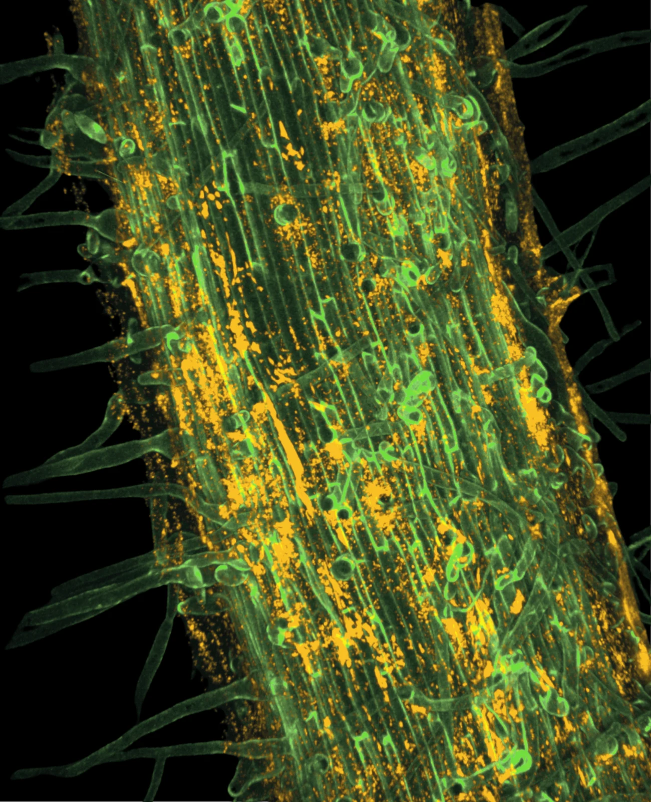

Observe
Environmental engineering + microbiology
Our lab brings microbiology and engineering together to understand how microbes shape their surroundings and how we can apply that knowledge to improve soil health and protect water quality.

Observe
Welcome to the Alcalde Lab
We’re launching the Alcalde Lab at Penn State in January 2027 and recruiting two PhD students to join us in Fall 2027. We welcome inquiries from students and postdoctoral researchers interested in one or more of these areas: environmental microbiology, solute transport, biogeochemistry, environmental biotechnology, and rhizosphere science.
What we do
We study how microbes function and interact in structured environments, and how their activity influences nutrient cycling and environmental chemistry. We apply this knowledge to investigate bioaugmentation and biostimulation strategies for agricultural nutrient management, and to develop biosensors for measuring conditions in soils and water.
How we do it
We design controlled experiments to uncover microbial mechanisms while retaining the environmental features that matter. We then test whether those mechanisms hold in more complex systems. When existing methods aren’t enough, we develop new tools.
Why we do it
We investigate how microbial processes can improve nutrient use, reduce fertilizer dependence and nutrient losses, and protect water quality. By connecting nutrient management with the energy demands of agriculture and its effects on water resources, our work contributes to the energy–food–water nexus.